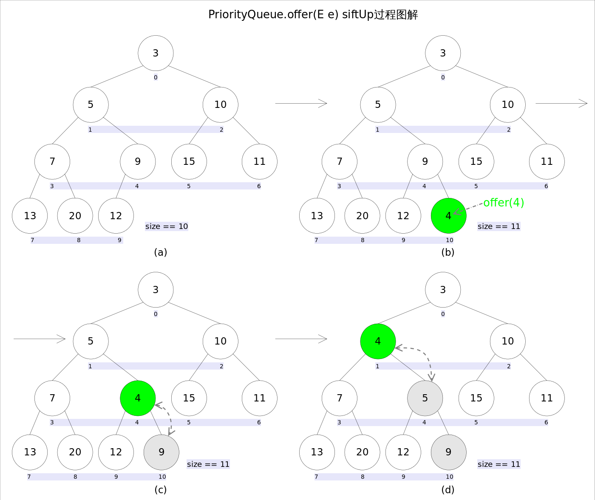
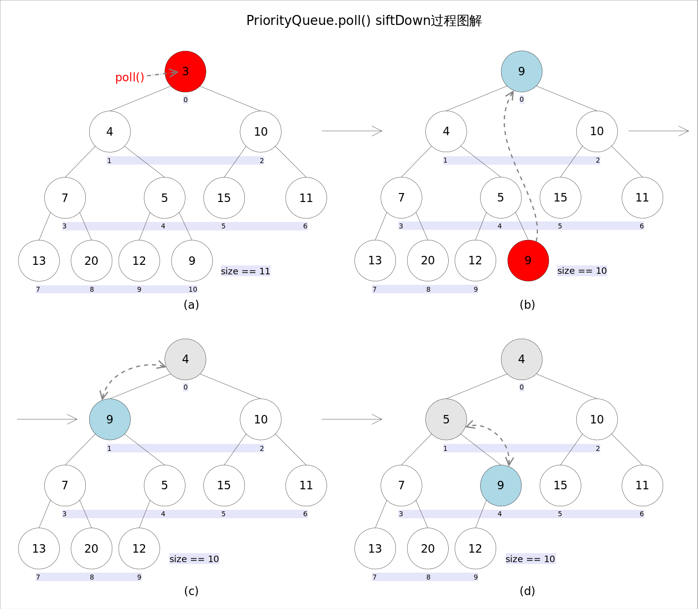
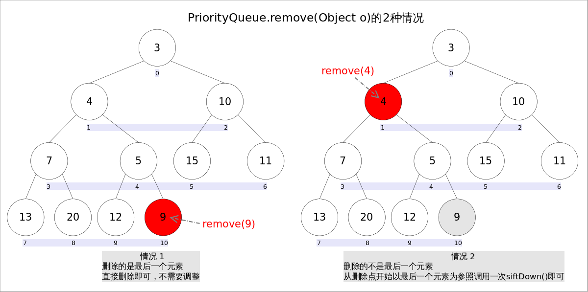

对于 PriorityQueue 来说，最重要的一点就是要清楚他是基于堆结构实现，可以用它来实现优先队列。



1
2
3
4
5
6
7
8
9
10
11
12
13
14
15
16
17
18
19
20
21
22
23
24
25
26
27
@Test
public void testSize() {
PriorityQueue<Integer> queue = new PriorityQueue<>(5);
for (int i = 0; i < 10; i++) {
queue.add(i);
}
assertThat(queue).hasSize(10);
}
@Test
public void test() {
int capacity = 5;
PriorityQueue<Integer> queue = new PriorityQueue<>(capacity);
for (int i = 0; i < 10; i++) {
queue.add(i);
if (queue.size() > capacity) {
Integer num = queue.poll();
System.out.println(num);
}
}
assertThat(queue).hasSize(capacity);
assertThat(queue).contains(9);
assertThat(queue).doesNotContain(0);
Integer num = queue.poll();
// 可见，默认就是最小堆。
assertThat(num).isEqualTo(5);
}
从上述例子中可以看出，PriorityQueue 的长度是回增长的。所以，如果需要定长的优先队列，则需要将多余数据"弹出"。